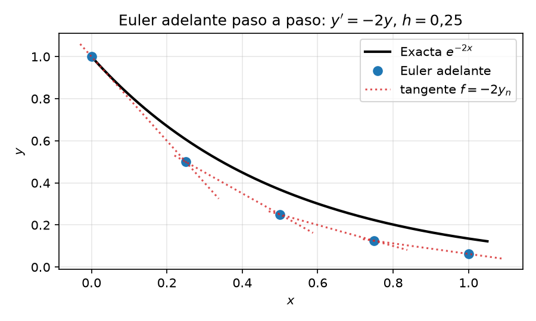
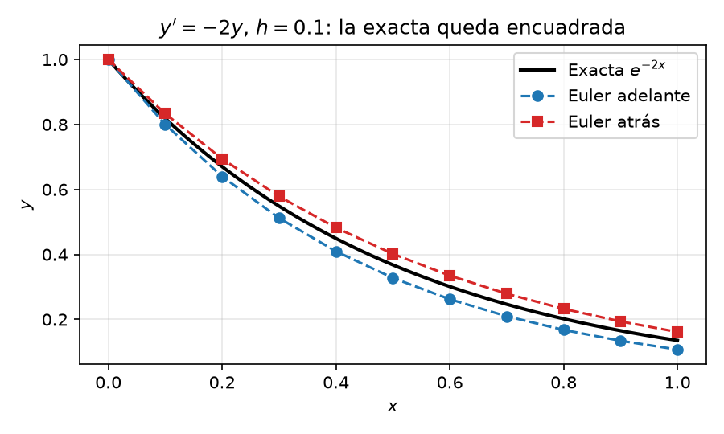

Un PVI proporciona todas las condiciones necesarias en un único punto inicial (típicamente \(x = a\) o \(t = 0\)).
\[y'' = f(x, y, y'), \quad \text{con } y(a) = \alpha \text{ e } y'(a) = \gamma\]
Es el esquema numérico más sencillo para resolver problemas de valor inicial de primer orden de la forma
\[\frac{dy}{dx} = f(x, y), \quad y(x_0) = y_0\]
Es un método explícito de paso único que estima el siguiente valor \(y_{n+1}\) siguiendo la recta tangente (la pendiente) desde el punto conocido \((x_n, y_n)\).
La ecuación de actualización es
\[y_{n+1} = y_n + h \cdot f(x_n, y_n)\]
donde
Desarrollando \(y(x)\) en serie de Taylor alrededor de \(x_n\)
\[y(x_n + h) = y(x_n) + h \cdot y'(x_n) + \frac{h^2}{2!} y''(x_n) + \mathcal{O}(h^3)\]
Truncando los términos de orden \(h^2\) y superiores se obtiene la fórmula de Euler hacia adelante.
Nuestro ejemplo guía en este capítulo es
\[y' = -2y, \quad y(0) = 1, \quad h = 0.1\]
La solución exacta es \(y(x) = e^{-2x}\), que usaremos para comprobar la precisión.
\[f(x_0, y_0) = -2(1) = -2\]
\[y_1 = y_0 + h \cdot f(x_0, y_0) = 1 + (0.1)(-2) = \mathbf{0.8}\]
\[f(x_1, y_1) = -2(0.8) = -1.6\]
\[y_2 = y_1 + h \cdot f(x_1, y_1) = 0.8 + (0.1)(-1.6) = \mathbf{0.64}\]
| \(n\) | \(x_n\) | \(y_n\) (Euler adelante) |
|---|---|---|
| 3 | 0.3 | \(0.64 \times 0.8 = \mathbf{0.512}\) |
| 4 | 0.4 | \(0.512 \times 0.8 = \mathbf{0.4096}\) |
| 5 | 0.5 | \(0.4096 \times 0.8 = \mathbf{0.3277}\) |

El método de Euler hacia atrás es un esquema numérico implícito de paso único. Mientras Euler hacia adelante evalúa la pendiente al inicio del paso, Euler hacia atrás la evalúa al final (\(x_{n+1}\)). Se llama «implícito» porque el valor buscado —\(y_{n+1}\)— aparece dentro de la función en el lado derecho de la ecuación
\[y_{n+1} = y_n + h \cdot f(x_{n+1}, y_{n+1})\]
donde \(x_{n+1} = x_n + h\) (con \(h\) el tamaño de paso) y \(f(x_{n+1}, y_{n+1})\) es la pendiente en el estado objetivo, aún desconocido.
No se puede evaluar directamente el lado derecho con aritmética simple, porque \(y_{n+1}\) se define a sí mismo, por lo que hay que resolver una ecuación algebraica (o un sistema) en cada paso. A cambio, el método es mucho más estable para problemas rígidos.
Desarrollando \(y(x_n)\) hacia atrás desde \(x_{n+1}\)
\[y(x_n) = y(x_{n+1}) - h \cdot y'(x_{n+1}) + \mathcal{O}(h^2)\]
Al despejar \(y(x_{n+1})\) se obtiene la fórmula de Euler hacia atrás.
Continuamos con el mismo ejemplo guía, \(y' = -2y\), \(y(0) = 1\), \(h = 0.1\).
\[y_{n+1} = y_n + 0.1 \cdot (-2 y_{n+1})\]
\[y_{n+1} + 0.2 y_{n+1} = y_n \implies 1.2 y_{n+1} = y_n \implies y_{n+1} = \frac{y_n}{1.2}\]
| \(n\) | \(x_n\) | \(y_n\) (Euler atrás) |
|---|---|---|
| 1 | 0.1 | \(1/1.2 \approx \mathbf{0.8333}\) |
| 2 | 0.2 | \(0.8333/1.2 \approx \mathbf{0.6944}\) |
| 3 | 0.3 | \(0.6944/1.2 \approx \mathbf{0.5787}\) |
| 4 | 0.4 | \(0.5787/1.2 \approx \mathbf{0.4823}\) |
| 5 | 0.5 | \(0.4823/1.2 \approx \mathbf{0.4019}\) |
Apunte no lineal. Para una EDO no lineal como \(y' = -y^2\), el mismo paso exige resolver \(0.1\,y_{n+1}^2 + y_{n+1} - y_n = 0\) — aquí una cuadrática, pero en general una ecuación no lineal que requiere Newton–Raphson en cada paso. Ese es el coste del esquema implícito, cada paso requiere resolver una ecuación que el método explícito evita.
Como \(y'=f(x,y)\), en un paso se cumple \(y_{n+1}=y_n+\int_{x_n}^{x_{n+1}}f(x,y(x))\,dx\). Euler adelante aproxima la integral con el valor de la pendiente al inicio; Euler atrás, con el valor al final. RK2 estima una pendiente intermedia para cancelar el término principal del error, y RK4 combina cuatro pendientes para alcanzar cuarto orden. Esta interpretación explica el encuadre del ejemplo. Para esta solución decreciente y convexa, Euler adelante subestima y Euler atrás sobreestima. No es una propiedad universal de ambos métodos.
Ambos métodos aplicados a \(y' = -2y\), \(y(0) = 1\), \(h = 0.1\), con solución exacta \(y = e^{-2x}\)
| \(x_n\) | Euler adelante | Euler atrás | Exacta \(e^{-2x}\) | Error adelante | Error atrás |
|---|---|---|---|---|---|
| 0.1 | 0.8000 | 0.8333 | 0.8187 | 0.0187 | 0.0146 |
| 0.2 | 0.6400 | 0.6944 | 0.6703 | 0.0303 | 0.0241 |
| 0.3 | 0.5120 | 0.5787 | 0.5488 | 0.0368 | 0.0299 |
| 0.4 | 0.4096 | 0.4823 | 0.4493 | 0.0397 | 0.0330 |
| 0.5 | 0.3277 | 0.4019 | 0.3679 | 0.0402 | 0.0340 |

En este ejemplo, Euler adelante subestima y Euler atrás sobreestima, de modo que la exacta queda entre ambos. Los dos tienen error global \(\mathcal{O}(h)\); Euler atrás resulta aquí ligeramente más preciso. Este encuadre depende de la forma de la solución y no vale para toda EDO. La comparación de estabilidad y de coste por paso se desarrolla en Estabilidad.
Comprueba tu comprensión. Si repites la tabla anterior con \(h = 0.05\), ¿en qué factor esperas que se reduzcan los errores de ambos métodos? ¿Y con un método de orden 2 como RK2 de Runge–Kutta?
Todo lo anterior usa una única ecuación escalar, pero los métodos se generalizan a sistemas sin cambiar las fórmulas — basta sustituir escalares por vectores.
Un sistema de \(m\) EDO de primer orden es
\[\mathbf{y}' = \mathbf{f}(x, \mathbf{y}), \quad \mathbf{y}(x_0) = \mathbf{y}_0, \quad \mathbf{y} \in \mathbb{R}^m\]
Euler hacia adelante se aplica literalmente
\[\mathbf{y}_{n+1} = \mathbf{y}_n + h\,\mathbf{f}(x_n, \mathbf{y}_n)\]
y lo mismo ocurre con Euler hacia atrás (\(\mathbf{y}_{n+1} = \mathbf{y}_n + h\,\mathbf{f}(x_{n+1}, \mathbf{y}_{n+1})\)), RK4 y cualquier otro método de este capítulo — la única diferencia es que cada «evaluación de \(f\)» devuelve un vector, y en los métodos implícitos la resolución algebraica se convierte en un sistema lineal o no lineal en lugar de una ecuación escalar.
Toda EDO de orden \(n\) puede convertirse en un sistema de \(n\) EDO de primer orden introduciendo variables auxiliares para cada derivada
\[y^{(n)} = f(x, y, y', \dots, y^{(n-1)})\]
se convierte, con \(u_1 = y,\; u_2 = y',\; \dots,\; u_n = y^{(n-1)}\), en
\[\begin{cases} u_1' = u_2 \\ u_2' = u_3 \\ \vdots \\ u_n' = f(x, u_1, u_2, \dots, u_n) \end{cases}\]
Esta es exactamente la reducción que usa el método del
disparo en PVF, un problema de valores
de frontera (PVF) de 2º orden \(y'' =
f(x, y, y')\) se convierte en el sistema \(2 \times 2\) \(u_1' = u_2,\; u_2' = f(x, u_1,
u_2)\), que después se integra con RK4. Todo integrador de PVI en
la práctica (ode45 de MATLAB, solve_ivp de
SciPy, etc.) trabaja internamente con sistemas de primer orden, así que
esta reducción es el punto de entrada estándar a la resolución numérica
de EDO.
La EDO de 2º orden \(y'' + \omega^2 y = 0\) (movimiento armónico simple) se convierte en un sistema de primer orden llamando \(u = y\) a la posición y \(v = y'\) a la velocidad
\[u' = v, \qquad v' = -\omega^2 u, \qquad u(0) = y_0, \quad v(0) = v_0\]
Un paso de Euler hacia adelante con \(h = 0.1\), \(\omega = 1\), \(u_0 = 1\), \(v_0 = 0\) actualiza cada variable por separado, igual que en el caso escalar
\[u_1 = u_0 + h\,v_0 = 1 + 0.1 \cdot 0 = 1.0, \qquad v_1 = v_0 + h\,(-\omega^2 u_0) = 0 - 0.1 \cdot 1 = -0.1\]
La posición no cambia en el primer paso (la velocidad inicial es nula) y la velocidad se vuelve negativa — el oscilador empieza a descender desde el desplazamiento máximo, como corresponde a la solución exacta \(y = \cos x\).
Hasta ahora hemos resuelto EDO de primer orden marchando por el dominio, partiendo del valor inicial conocido \(y(0) = \alpha\) y avanzando en incrementos de tamaño \(h\), calculando cada nuevo valor \(y_i\) a partir del anterior \(y_{i-1}\) (con los esquemas de Euler hacia adelante o hacia atrás). Este enfoque secuencial funciona porque un problema de valor inicial de primer orden aporta toda la información necesaria en el punto de partida.
El Método de Diferencias Finitas (MDF) adopta en cambio una visión global, discretiza todo el dominio de una vez y cada punto de la malla se convierte en una incógnita. La derivada en cada punto se reemplaza por una aproximación en diferencias finitas, y todas las ecuaciones algebraicas resultantes se reúnen en un único sistema lineal \(A\mathbf{y} = \mathbf{b}\) que se resuelve simultáneamente, en lugar de paso a paso.
Ilustramos el método con el mismo ejemplo guía, ahora resuelto globalmente
\[y' = -2y, \quad y(0) = 1, \quad x \in [0, 1]\]
En este caso sencillo el sistema resultante es triangular inferior — cada ecuación vincula \(y_i\) solo con \(y_{i-1}\) — de modo que resolverlo colapsa a la misma sustitución progresiva que marchar. La ventaja de la formulación global del MDF se hace patente en los problemas de valores de frontera, donde las condiciones se dan en ambos extremos y no se puede marchar desde un único punto; ahí, plantear y resolver el sistema completo de una vez es lo que hace el problema tratable.
Dividimos el intervalo \([0, 1]\) en \(N = 4\) subintervalos de tamaño \(h = 0.25\)
\[y'(x_i) \approx \frac{y_i - y_{i-1}}{h}\]
Sustituyendo en la EDO \(y' = -2y\)
\[\frac{y_i - y_{i-1}}{h} = -2y_i \implies -y_{i-1} + (1 + 2h)\,y_i = 0\]
Aplicamos el esquema discretizado del Paso 2 en cada punto interior de la malla \(i = 1, 2, \dots, N\). Cada punto aporta una ecuación lineal que vincula \(y_i\) con su vecino \(y_{i-1}\) (y con el valor inicial conocido \(y_0 = 1\)), produciendo un sistema lineal \(N \times N\), \(A\mathbf{y} = \mathbf{b}\). Como el stencil de diferencia hacia atrás acopla cada incógnita solo con la anterior, \(A\) es triangular inferior y el sistema se resuelve directamente por sustitución progresiva — no hace falta invertir matrices ni usar solucionadores iterativos en este caso simple.
Plantemos el sistema del ejemplo guía con el esquema de diferencia hacia atrás y \(h = 0.25\)
\[-y_{i-1} + (1 + 2(0.25))y_i = 0 \implies -y_{i-1} + 1.5\,y_i = 0\]
Escribiendo esta ecuación para todos los puntos de la malla \(i = 1, 2, 3, 4\) (pasando el valor conocido \(y_0 = 1\) al lado derecho)
\[-y_0 + 1.5\,y_1 = 0 \implies 1.5\,y_1 = y_0 = 1\]
\[-y_1 + 1.5\,y_2 = 0\]
\[-y_2 + 1.5\,y_3 = 0\]
\[-y_3 + 1.5\,y_4 = 0\]
En forma matricial (\(A\mathbf{y} = \mathbf{b}\))
\[\begin{bmatrix} 1.5 & 0 & 0 & 0 \\ -1 & 1.5 & 0 & 0 \\ 0 & -1 & 1.5 & 0 \\ 0 & 0 & -1 & 1.5 \end{bmatrix} \begin{bmatrix} y_1 \\ y_2 \\ y_3 \\ y_4 \end{bmatrix} = \begin{bmatrix} 1 \\ 0 \\ 0 \\ 0 \end{bmatrix}\]
Resolviendo por sustitución progresiva
La solución exacta es \(y(x) = e^{-2x}\).
| \(x_i\) | MDF (\(y_i\)) | Exacta \(y(x)\) | Error absoluto |
|---|---|---|---|
| 0.25 | 0.6667 | 0.6065 | 0.0602 |
| 0.50 | 0.4444 | 0.3679 | 0.0765 |
| 0.75 | 0.2963 | 0.2231 | 0.0732 |
| 1.00 | 0.1975 | 0.1353 | 0.0622 |
Nota: estos son exactamente los mismos valores que produciría Euler hacia atrás con \(h = 0.25\) — el sistema MDF triangular inferior para un PVI de 1er orden es marchar. Esto confirma la conexión anunciada en la introducción. MDF y marcha coinciden para PVI de 1er orden, y solo difieren en los PVF, donde la matriz deja de ser triangular. Reducir \(h\) (p. ej. a \(h = 0.01\)) o usar un esquema de diferencias centradas de mayor orden reduce significativamente el error.